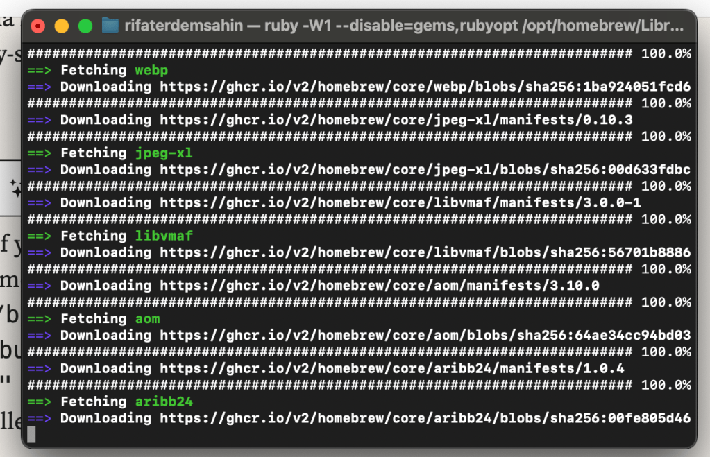
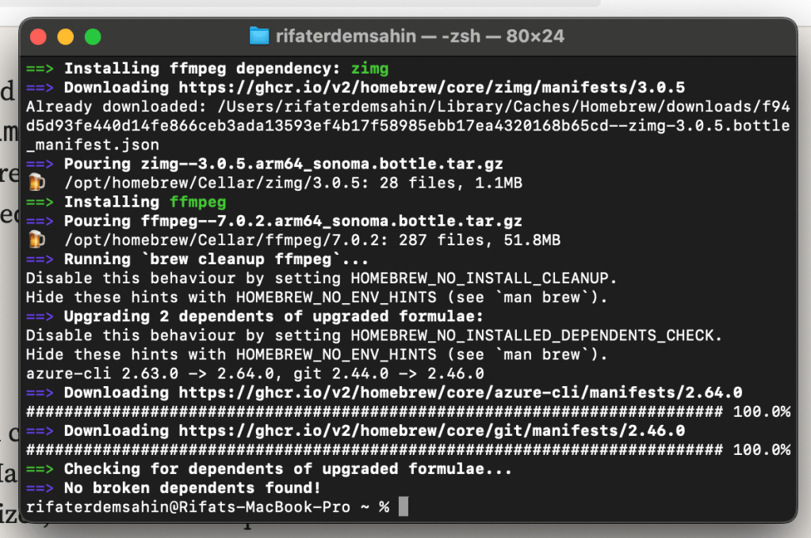
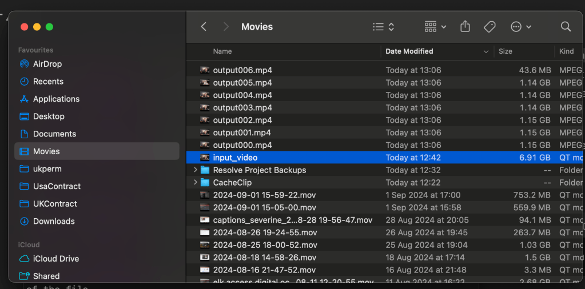
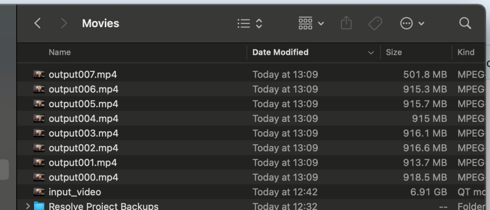

How to Split a Video into 999 MB Parts Using FFmpeg on macOS
If you need to split a video file into smaller parts, such as 999 MB chunks, using FFmpeg on macOS, you're in the right place. FFmpeg is a powerful tool for handling multimedia files, and splitting videos is one of its many capabilities. Here’s a step-by-step guide to get you started.
Prerequisites
- Install FFmpeg: First, if you haven’t installed FFmpeg on your Mac, you can do so using Homebrew. Open Terminal and run the following commands:
/bin/bash -c "$(curl -fsSL https://raw.githubusercontent.com/Homebrew/install/HEAD/install.sh)" brew install ffmpegThis will install Homebrew (if not installed) and then use it to install FFmpeg.


Splitting the Video
Once FFmpeg is installed, you can split your video into parts of 999 MB each. Follow the steps below.
-
Open Terminal.
-
Navigate to your video file location: Use the
cdcommand to go to the folder containing your video. For example:cd /path/to/your/video -
Run the FFmpeg Command: Use the following FFmpeg command to split your video file into 999 MB chunks:
ffmpeg -i input_video.mp4 -c copy -map 0 -segment_time 00:10:00 -f segment -segment_size 999M output%03d.mp4Here’s a breakdown of the command: -
-i input_video.mp4: Specifies the input video file. -
-c copy: Copies the video and audio without re-encoding (faster and lossless). -
-map 0: Maps all streams (video, audio, subtitles) from the input file to the output files. -
-segment_time 00:10:00: Sets a segment duration of 10 minutes (can be adjusted to your needs). -
-f segment: Specifies that you want to split the video into multiple segments. -
-segment_size 999M: Limits each segment to 999 MB. -
output%03d.mp4: Specifies the output file name format, where%03dwill be replaced by a three-digit number for each part (e.g., output001.mp4, output002.mp4, etc.).
Notes:
-
If you want to split based purely on size and not duration, you can omit the
-segment_timeoption. -
The
-c copyflag ensures no re-encoding, which preserves the original quality and speeds up the process.
Conclusion
That’s it! Using FFmpeg, you can easily split large video files into smaller chunks of 999 MB on your Mac. Whether you need to share, upload, or store video files in smaller sizes, this method is quick and efficient.
If you have any questions or run into issues, feel free to ask in the comments below!
5 minute seperation looks better

The error you're encountering is due to FFmpeg trying to copy a data stream (Stream #0:2) which contains timecode information (tmcd), and the MP4 container doesn't support this codec type. Since timecode streams are generally not required for playback, we can simply exclude this stream when processing the video.
To fix this, you can map only the video and audio streams explicitly, excluding the timecode stream. Here's the updated command:
Updated FFmpeg Command:
ffmpeg -i input_video.mov -c copy -map 0:v -map 0:a -f segment -segment_time 00:05:00 -reset_timestamps 1 -segment_format_options movflags=+faststart output%03d.mp4
Breakdown of Changes:
-
-map 0:v: This maps only the video stream from the input file. -
-map 0:a: This maps only the audio stream from the input file. -
The data stream (
Stream #0:2) containing the timecode is excluded.
Explanation:
- This command should now process only the video and audio streams and split them into 5-minute segments, without including the unsupported timecode stream that caused the error.
Run this command and it should work correctly. Let me know if you encounter any other issues!
Output seperated

🔗 Connect with me:
-
💼 LinkedIn: https://www.linkedin.com/in/rifaterdemsahin/
-
🐦 Twitter: https://x.com/rifaterdemsahin
-
🎥 YouTube: https://www.youtube.com/@RifatErdemSahin
-
💻 GitHub: https://github.com/rifaterdemsahin
Imported from rifaterdemsahin.com · 2024